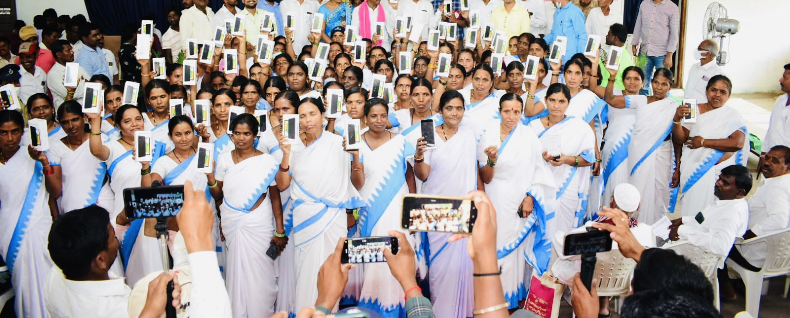
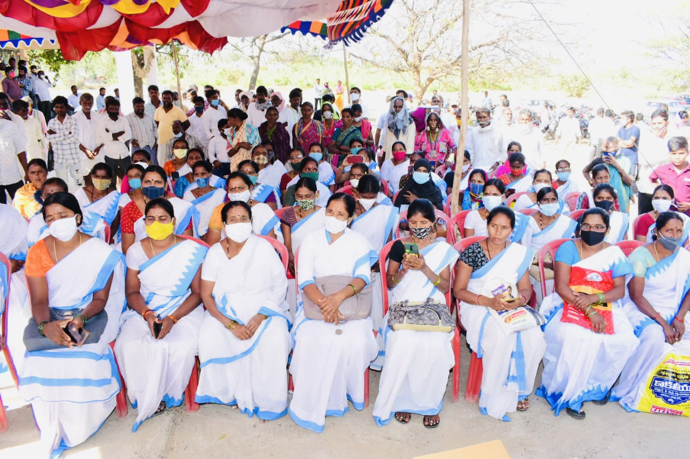

COMMUNITY SERVICE
With the paradigm shift towards the digital world during and post the pandemic, it was a great experience to inculcate the same in a rural and underlying area of my state. A group of 50+ healthcare workers were handed over smartphones at the COVID-19 Health care centre, in Telangana, India. My friends and I organised a small scale mutual fund raiser from nearest friends and family for making this happen. We conducted a digital awareness campaign to help the health workers navigate through the app COWIN, that was released by the central government of India, for real time monitoring of COVID-19 Facilities.
The rural population was educated about the importance of digital systems and how the tasks of their everyday lives would be eased out once they get accustomed to using them. I believe through technology, the population from backward sections will become more aware of government schemes being offered to them- they’ll in turn have adequate knowledge about their privileges, and can thereby question authorities when their rights are violated. I hope to play my role in implementing technology in every rural pocket of India.
